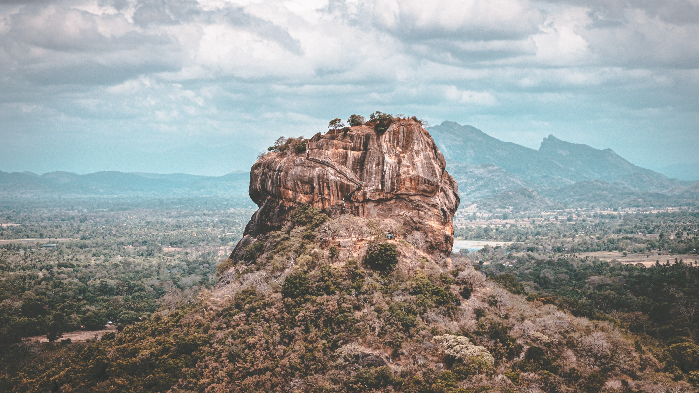

Nine Arch
The atmosphere in Nine Arch is soulful!

Sigiriya
Rock of ancestors!

Arugam Bay
Sri Lanks's most famous surfing beach!
The atmosphere in Nine Arch is soulful!
Rock of ancestors!
Sri Lanks's most famous surfing beach!
We love travelling!
Sri Lanka is one of the world's most popular tourist destinations. To express the richness, beauty and the intensity of affection : the visitors addressed the country as Serendib, Ceylon, Teardrop of India, Resplendent Isle, Island of Dharma, and Pearl of the Orient. It is also a land of staggering contrast and spectacular beauty due to its compactness. Along the coast, visitors can explore amazing beaches, safari tours, guided walks through ancient cities, experience the culture and bit of modern Sri Lanka. We welcome you to find your unique Sri Lankan travel experience. So, we've created a website for all travellers around Sri Lanka that is extremely useful. The most famous destinations will be shown with the most important information. It will only take minutes for you to explore the serenity of Mother Lanka.
We are passionate about travel and sharing Island's wonders with you.
Visit us and make your travelling easy!
Footsteps will suggest you some tours
Remember to check us daily!

Forest Roams
Beach Holidays
Mountain Holidays
We love our visitors!
Love our website? Drop a note.
Colombo, Sri Lanka
Phone: +94 768460150
Email: milhannasmy21@gmail.com